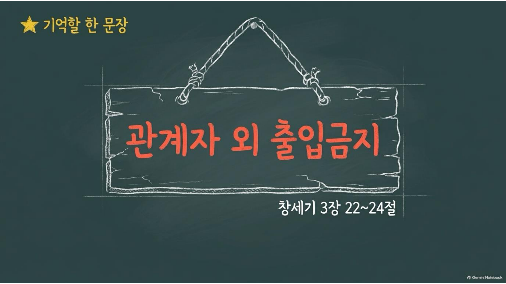

2026.09.20 주일 설교 묵상
이제, 들어가도 됩니다
닫혔던 문 앞에서, 하나님이 스스로 여신 길을 하루씩 따라가는 일주일
주일 설교 다시보기
설교 영상은 편집이 끝나는 대로 추가됩니다.
본문: 창세기 3:22-24 (개역개정) · 설교자: 황성현 목사
하나님은 에덴의 문을 닫으셨습니다. 미워서가 아니라 살리시려고 하신 일이었습니다. 내보내시면서도 사명은 거두지 않으셨고, 결국 그 닫힌 문을 십자가로 스스로 여셨습니다. 관계자였던 사람이 관계자 외가 되었지만, 예수 그리스도로 인해 우리는 이제 다시 들어가도 되는 사람이 되었습니다.
하나님은 에덴의 문을 닫으셨습니다. 미워서가 아니라 살리시려고 하신 일이었습니다. 내보내시면서도 사명은 거두지 않으셨고, 결국 그 닫힌 문을 십자가로 스스로 여셨습니다. 관계자였던 사람이 관계자 외가 되었지만, 예수 그리스도로 인해 우리는 이제 다시 들어가도 되는 사람이 되었습니다.
주일 설교 슬라이드
1 / 10

좌우 화살표를 눌러 슬라이드를 넘겨보세요.
매일 이렇게 새로워지세요
- 막힘을 원망 대신 살피기: 지금 막혀 있는 일이 혹시 나를 지키시려는 하나님의 손은 아닌지 하루에 한 번 돌아봅니다.
- 있는 자리에서 몫을 다하기: 원하지 않는 자리에서도 하나님이 남겨두신 오늘의 일을 찾아 감당합니다.
- 먼저 다가가는 사람 되기: 화해가 필요한 사람에게 내가 먼저 손을 내미는 쪽이 되어봅니다.
- 이미 들어감을 얻은 자로 살기: 눈치 보며 문 앞을 서성이지 않고, 담대히 하나님께 나아가는 하루를 삽니다.
요일별 묵상 여정
월요일
제목
성경구절